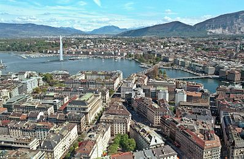

wikipedia-geneva
Geneva (/dʒɪˈniːvə/ jin-EE-və; French: Genève [ʒ(ə)nɛv] (About this soundlisten); Arpitan: Genèva [dzəˈnɛva] (About this soundlisten); German: Genf [ɡɛnf] (About this soundlisten); Italian: Ginevra [dʒiˈneːvra]; Romansh: Genevra) is the second-most populous city in Switzerland (after Zürich) and the most populous city of Romandy, the French-speaking part of Switzerland. Situated where the Rhône exits Lake Geneva, it is the capital of the Republic and Canton of Geneva.

The municipality (ville de Genève) has a population (as of December 2017) of 200,548, and the canton (essentially the city and its inner-ring suburbs) has 495,249 residents.[4] In 2014, the compact agglomération du Grand Genève had 946,000 inhabitants in 212 communities in both Switzerland and France.[5] Within Swiss territory, the commuter area named "Métropole lémanique" contains a population of 1.26 million.[6][7] This area is essentially spread east from Geneva towards the Riviera area (Vevey, Montreux) and north-east towards Yverdon-les-Bains, in the neighbouring canton of Vaud.
Geneva is a global city, a financial centre, and a worldwide centre for diplomacy due to the presence of numerous international organizations, including the headquarters of many agencies of the United Nations[8] and the Red Cross.[9] Geneva hosts the highest number of international organizations in the world.[10] It is also where the Geneva Conventions were signed, which chiefly concern the treatment of wartime non-combatants and prisoners of war.
- ep
- word a
- word b
- word c